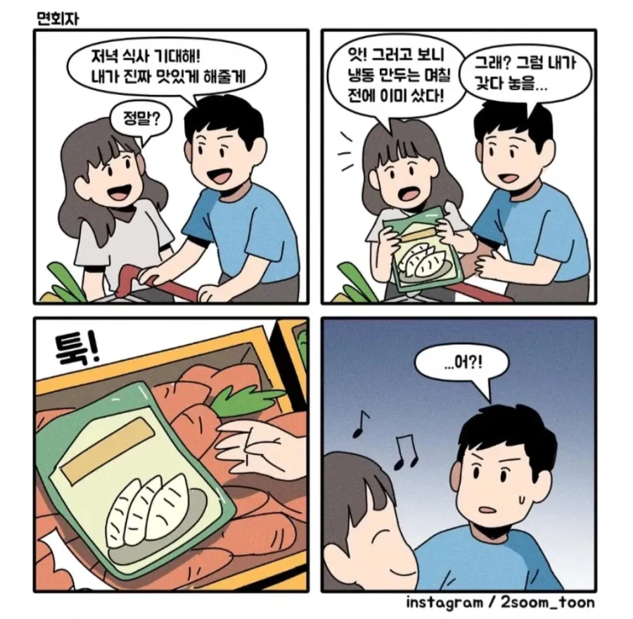

어?

어?
가끔 진열상품이랑 안맞는 엉뚱한게 있던게 저거였구나
그냥 숨쉬듯 자연스럽게 나오는 도덕적 해이
천민 자본주의에 깊에 찌든 사람인경우를 많이봄
돈냈으니 손님이라 괜찮다
상품 진열된 매대에 지 쳐먹은 사탕껍데기 버리고 간 새끼, 안쓰는 매대 덮어둔거 정성스레 열어서 쓰레기 버리고 가는 새끼, 우산꽂이에 카페 플라스틱 컵 꽂아놓고 가는 새끼, 포장용 종이 상자 모아둔곳에 종이쓰레기도 종이라고 버리고 가는 새끼 등등 걍 짐승이 많음
이건 기회다 방생 기회
마트가면 생각보다 저러는사람 존나많더라
이런 병신년들 의외로 많음ㅋㅋ
뭐 환타 꺼냈다가 콜라로 바꾸고
환타는 사이다 자리에 대충 던져넣는애들
내가볼때 정신병 아니면 치매 둘중하나라고본다
더 열받는건 저런 당연한 상식을 그러면 안된다고 지적하는 순간 삔또상한 티 내는 거임
지적했을 때 잘못을 받아들일 줄 안다면 문제가 안됨
이게 제일 크지 씨발년들이 능지도 딸리고 인성도 터졌는데 자존심이 남음
방생할 기회를 줬잖아

차라리 계산대에 줘라 ㅅㅂ
저러는 사람이 있어? 아직까진 못봤는데
중국인아님?
배려는 지능이다
구라안치고 이마트에서 저러는 사람 봤는데
엉? 지능이 낮은가?
길 한복판에 똥 싸는 애들 수준임 난 첨에 만화가 무슨 의도인지 이해도 못하다가 댓글보고 이해함. 저러면 안된다고 얘기하면 오히려 성낼거 같다
아무데나 상품 버려놓기
사주경계 안하는 거북이
바리케이트
이 세가지가 ㅈㄴ싫음
계산대에주라고
마트알바 하면 저런거 많이 보임 ㅋㅋ 냉동 제품 아무데나 던져놓거나 냉장제품 냉동에 넣어두거나